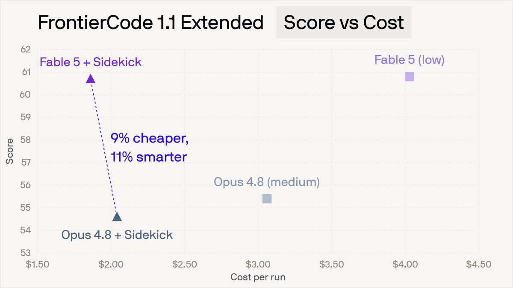
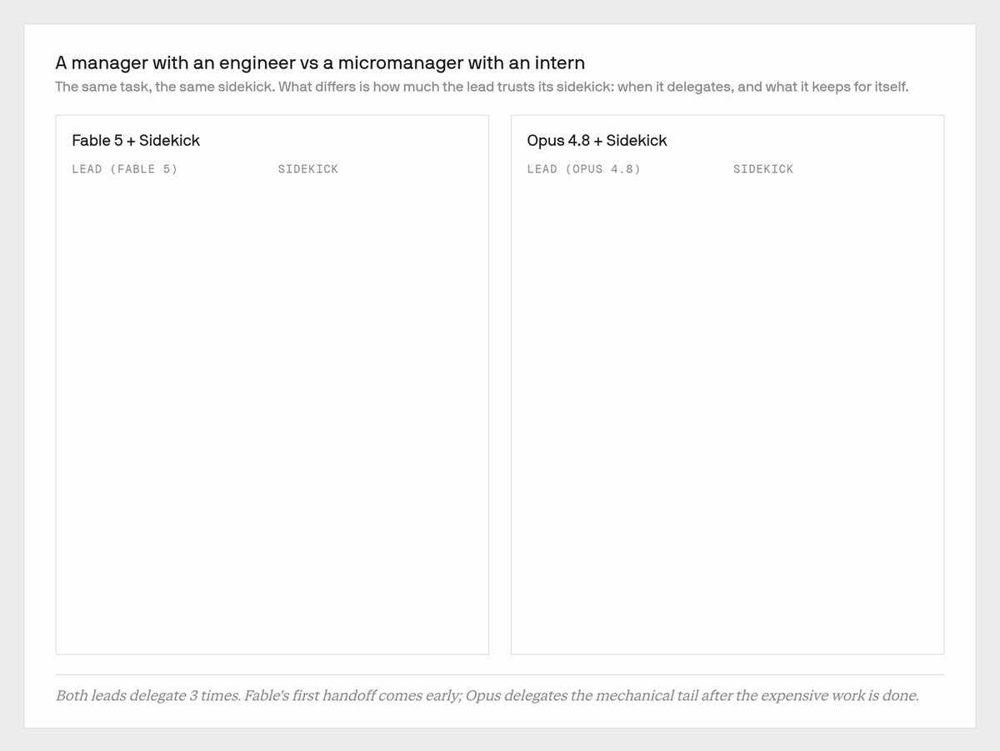
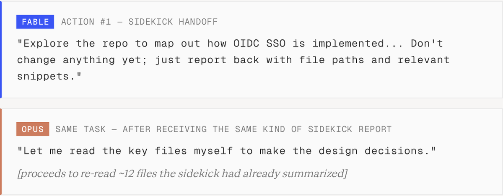
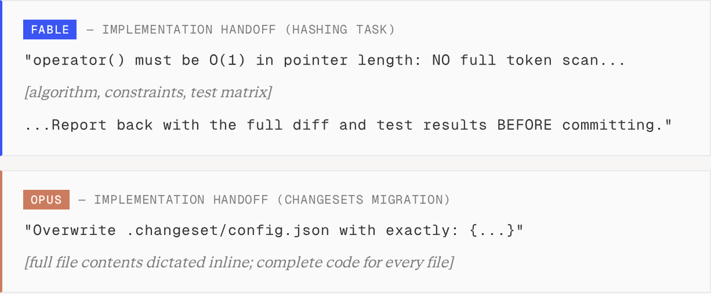
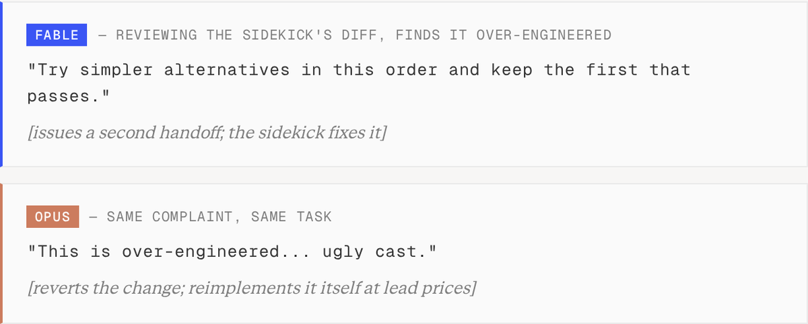

我们用Fable 5替换了Opus 4.8，Devin的账单反而降了。
Fable 5每token比Opus 4.8贵一倍。但当我们在FrontierCode 1.1上用新的Fusion架构同时跑这两个模型时，Fable反而更便宜，而且不出意外，分数还更高。这篇文章解释为什么，以及这对Agent工作的定价意味着什么。
每个跑过coding Agent的人都知道：更强的模型给出更好的结果，但你要为它买单。
当我们推出Devin Fusion时，我们展示了一条出路：让一个前沿模型坐镇主控，把它委派给一个更便宜、更快的sidekick，你就能以低35% 的成本拿到前沿级表现。
但一旦主控模型把大部分活都委派出去了，它那按token算的单价还主导账单吗？Fable 5每token比Opus 4.8贵2倍，所以一个Fable主导的Agent理应更贵。为了搞清楚，我们在FrontierCode 1.1上跑了3000个评估session，覆盖四种配置：Fable和Opus分别坐镇主控，各自再分「带sidekick」和「不带sidekick」两种情况。
纯跑的版本完全符合直觉：Fable分数压过Opus（60.8 vs 55.4），成本也更高。模型更强，账单更大。
真正有意思的是带上sidekick的版本。

图：四种配置在FrontierCode 1.1上的得分与每轮平均成本对比先快速复习一下Fusion的sidekick架构怎么运作。主控Agent拥有整个session：它跟用户对话、做规划、审阅工作、提交代码。它还有一个常驻的sidekick子Agent用来委派任务。主控用自然语言写一份交接简报（handoff brief），由那个便宜得多的模型驱动的子Agent在自己的上下文里执行，再回报结果。主控审阅结果，决定下一步。
为了找出钱花在哪，我们做了两件事。第一，我们解析了全部3000个session里的每一次LLM调用：谁在说话、调了什么工具、读写了多少token、每次调用花了多少。第二，我们挑了40个任务做细看：Fable明显更便宜的、Opus明显更便宜的，以及从中间随机抽的一批。对每一个，我们把Fable-led的运行和Opus-led的运行并排分析，看轨迹、看美元流向哪里。
下面是我们实验里成本在lead和sidekick之间的拆分：
| 配置 | 得分 | 每轮成本（均值） |
|---|---|---|
| Fable 5 (low) + Sidekick | 60.7 | $1.86 |
| Opus 4.8 (medium) + Sidekick | 54.6 | $2.04 |
| Fable 5 (low) | 60.8 | $4.03 |
| Opus 4.8 (medium) | 55.4 | $3.06 |
那2倍的每token溢价，其实是个看错了的指标。一个Agent的成本，主要被lead模型花了多少轮、它拖着多少上下文、以及（尤其关键）它决定不自己做什么所主导。差异归结到管理风格：Opus像个带着实习生的微观管理者，Fable则是个带着能干工程师的经理。
| Lead花费 | Sidekick花费 | 每轮总计 | Lead每轮轮数 | Lead累计输入token | |
|---|---|---|---|---|---|
| Fable + Sidekick | $1.28 | $0.58 | $1.86 | 11.5 | 545k |
| Opus + Sidekick | $1.73 | $0.31 | $2.04 | 26.5 | 1,679k |
让差距有意思的地方在这里：两个lead委派的次数一样多，大约每轮3次交接。逐次调用的日志推翻了「Fable只是委派得更多」这个简单解释。不同的是它们委派的时间和内容。Fable的第一次交接来得很早。Opus常常派得晚，在一段漫长的独自探索和实现之后才交出去；到那时候，设计决策已经定了，重要文件已经在它上下文里了，贵的活已经干完了。
一个典型的Fable-led运行，会对仓库做几次侦察动作，然后写一份规格级的简报，把整个「实现+测试+lint」循环一次性委派出去。接着一个git show审阅diff，然后提交。
一个典型的Opus-led运行，要经过20到45轮独自探索、设计和实现，最后才为机械性的收尾做一次交接。
有时Fable在一个session里的第一个动作就是交接。在同一个任务上，两个lead的开局长这样：
显而易见的修法是让Opus委派更多探索，但强行那样做往往会拉低表现。知道一次调查什么时候可以安全交接、什么时候必须自己上手，这本身就是一个判断。一个被强迫去委派的模型并不会获得那种判断，它只是把错误的东西委派出去。
每个模型的管理风格，也体现在交接简报本身上。当Opus委派实现时，它在下指令；而Fable写的是一份设计文档：
委派不只是挪动成本，它也改变了工作的质量。上面的哈希任务就是个鲜明的例子。任务规范要求哈希函数对指针长度是O(1) 的。Opus是手写的，而且从没把这条要求写下来。过程中某个地方它忘了这个约束，交付了一个线性时间实现，得分25。相比之下，Fable用高层约束来委派。它的简报写着「operator() 必须对指针长度是O(1) 的：禁止全token扫描」。sidekick成功实现了这一点，得分94。
我们发现这个模式在各类任务上都成立。Fable的交接会枚举约束、边界情况，以及「完成」的定义，既省了自己的力，又让sidekick能又便宜又正确地把实现做完。

图：一个Fable-led运行的演示轨迹
图：同一任务下，Fable与Opus作为lead的开局动作对比
图：哈希任务示例：Fable的brief写明O(1) 约束，sidekick实现得分94；Opus手写实现漏掉约束，得分25另一半，是lead Agent怎么处理从sidekick那里回来的工作。两个lead常常都跑同一个便宜的检查：两三次git diff/git show调用。但Opus不会就此打住。它把sidekick的文件拉回自己上下文的频率是2倍，并且以lead的价格做了4倍的修正编辑。极端情况下，它revert掉sidekick的工作，亲手重写：
Opus的不信任也没有提升正确性。在一些评估任务里，Fable单次diff审阅就抓住了sidekick真实的bug，并选择再来一次便宜的交接，而不是像Opus那样动辄走lead级重写。

图：Opus不信任sidekick，把文件拉回自己上下文2倍频繁、以lead价格做4倍修正编辑，极端时revert后手写重写Fable的委派策略并非万能；当任务没有可分解的部件时它会失效。下面这几类任务似乎很难拆开：
短任务：只包含少数几次lead模型的轮次，在「决定」和「交付」之间没什么可委派的。
串行调试任务：根因追查是一条长长的判断链。在这里，累积起来的上下文本身就是工作。
值得注意的是，在这类任务上Fable几乎根本不委派。写出好简报的那种判断，同样知道什么时候不该写。但当任务没有任何值得交接的东西时，委派对成本就没有杠杆了。
在生产环境里，Fusion在另一层处理这个问题：委派控制决定哪些活留在贵模型上，而路由决定贵模型是否该参与进来。
参考：https://x.com/joon_h_lee/status/2076714221837173097